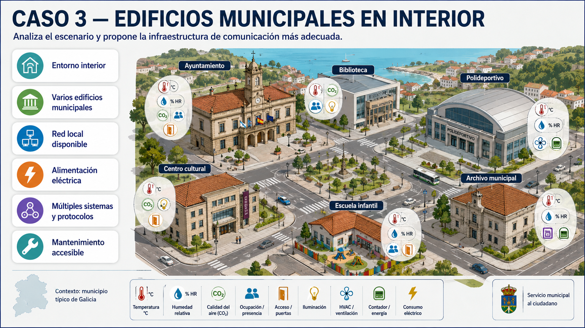
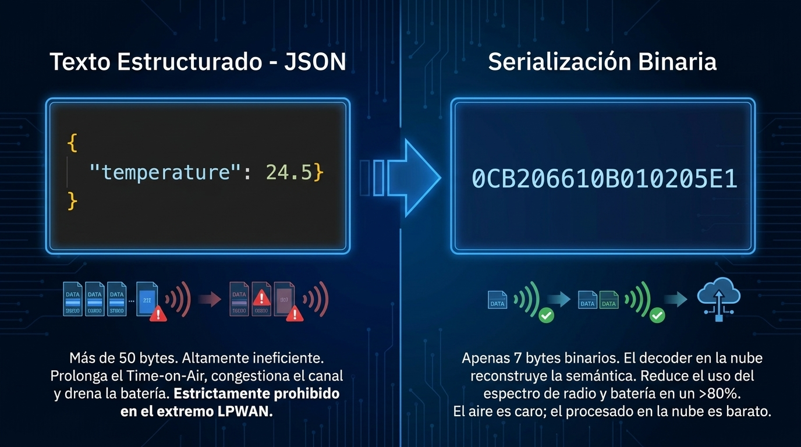

Idea central
El sensor normalmente no envia un documento rico y autoexplicativo. En muchos sistemas envia bytes compactos para ahorrar energia y ancho de banda. La capa de recoleccion transforma esos bytes en campos comprensibles.
Mapa interactivo para estudiar sensorizacion territorial, redes LPWAN, ciclo de vida del hardware, gateways, servidores de red, seguridad fisica, pentesting defensivo, eficiencia energetica y la practica TTN donde un payload compacto se convierte en JSON tecnico.
Una infraestructura IoT territorial no termina cuando el sensor mide. La cadena completa incluye variable fisica, transductor, nodo, energia, enlace, gateway u operador, servidor de red, decodificacion, validacion y entrega a plataforma.
El sensor normalmente no envia un documento rico y autoexplicativo. En muchos sistemas envia bytes compactos para ahorrar energia y ancho de banda. La capa de recoleccion transforma esos bytes en campos comprensibles.
La tecnologia de comunicacion se elige mejor cuando antes se entiende el tipo de variable, el entorno fisico y el patron de dato.
Temperatura, humedad, CO2, particulas, ruido, lluvia, viento, radiacion solar y calidad del aire.
Ocupacion de aparcamientos, conteo de vehiculos, velocidad, bicicletas, peatones y eventos de acceso.
Nivel en cauces, caudal, presion, deposito, bombeo, turbidez, conductividad y fugas.
Confort interior, climatizacion, iluminacion, consumo electrico, contadores, ocupacion y accesos.
No hay una tecnologia ganadora para todos los casos. La buena arquitectura nace de cruzar cobertura, distancia, energia, volumen de datos, coste y operacion.
Encaja en: muchos nodos, bajo consumo, mensajes pequenos y cobertura local mediante gateways.
Vigilar: ubicacion de gateway, duty cycle, penetracion indoor, calidad radio y mantenimiento.
Encaja en: activos dispersos, pocos dispositivos, dependencia de operador y cobertura celular disponible.
Vigilar: cuota SIM, cobertura real, autonomia, roaming, latencia y dependencia contractual.
Encaja en: edificios con red local, alimentacion estable y mantenimiento accesible.
Vigilar: segmentacion, credenciales, cambios de red, interferencias y soporte IT.
Encaja en: cuadros, salas tecnicas, contadores y entornos industriales con cableado.
Vigilar: tendido fisico, distancias, conversores, direccionamiento y aislamiento electrico.
LoRaWAN trabaja en espectro no licenciado y usa modulacion CSS, con alta robustez frente a ruido. La clase del dispositivo define el equilibrio entre autonomia, ventanas de recepcion y capacidad de recibir ordenes desde la red.
Consumo minimo. El nodo transmite y solo abre ventanas cortas de recepcion justo despues del uplink. Es el modo base de LoRaWAN y el mas adecuado para la mayoria de sensorica con bateria.
Incluye ventanas de recepcion programadas y sincronas con balizas del gateway. Permite una latencia mas predecible a cambio de un consumo superior.
El receptor permanece casi siempre abierto. Permite escucha continua y downlink con latencia muy baja, pero no es razonable para dispositivos pequenos alimentados solo con bateria.
NB-IoT y LTE-M forman parte del ecosistema 3GPP. Son opciones muy utiles para activos dispersos porque no obligan a desplegar gateways propios, pero trasladan parte de la soberania tecnica y operativa al operador celular.
Power Saving Mode: la radio queda fisicamente apagada, pero el dispositivo permanece logicamente registrado en la torre. Reduce handshakes al despertar y puede bajar a consumos del orden de microamperios.
Extended Discontinuous Reception: amplia los ciclos de paginacion para recibir comandos desde la nube con latencia controlada, alternando periodos de sleep y recepcion.
Pocos activos dispersos, puntos remotos, orografia compleja o ubicaciones donde desplegar y mantener gateways propios no compensa.
Cobertura real en campo, operador disponible, consumo con SIM fisica/eSIM, calidad de antena, latencia aceptable y coste recurrente.
Confundir simplicidad de despliegue con control total. La red funciona porque existe una infraestructura de operador que no gestionamos directamente.
Estas tecnologias son muy utiles en edificios, hogares o redes alimentadas. El problema aparece cuando se intenta trasladarlas sin matices a parcelas, cauces, aldeas dispersas o kilometros de sensorica territorial.
Contexto: excelente ancho de banda para camaras, equipos alimentados y edificios con infraestructura local.
Falla en territorio: consumo energetico alto, dependencia de routers locales, cobertura limitada y frecuente dependencia de nubes propietarias.
Uso razonable: interiores municipales, gateways, camaras o equipos con red electrica.
Contexto: red mallada de bajo consumo para automatizacion de edificios y sensores cercanos.
Falla en territorio: necesita nodos intermedios repetidores, que tambien requieren energia. El alcance real queda limitado por salto.
Uso razonable: edificios, aulas, salas tecnicas o entornos donde varios nodos esten proximos.
Contexto: ecosistema domestico cerrado, robusto en seguridad residencial sub-GHz.
Falla en territorio: enfoque comercial/domestico. No escala bien a cuencas hidrograficas, kilometros de vinedos o activos municipales dispersos.
Uso razonable: domotica y seguridad residencial, no como red territorial general.
El dato salta de nodo en nodo y puede superar algunos obstaculos geograficos si hay densidad suficiente de equipos.
Cada nodo transmite directamente a una estacion base, gateway u operador. El nodo puede enviar y volver a dormir inmediatamente.
Un despliegue territorial falla muchas veces por detalles de campo: alimentacion, envolvente, condensacion, anclaje, suciedad, deriva del sensor o falta de plan de mantenimiento.
En sensorica territorial la bateria dicta gran parte del MTBF: si el nodo despierta demasiado, mide demasiado o transmite demasiado, el mantenimiento deja de ser asumible aunque la red funcione.
El microcontrolador permanece en modo de bajo consumo. La corriente puede estar en el orden de microamperios si el firmware, sensores y reguladores estan bien elegidos.
Modos como LPBAM permiten adquirir datos de sensores sin despertar por completo la CPU principal. La idea es medir lo justo y procesar poco en campo.
La transmision puede subir a decenas o cientos de mA, pero dura milisegundos si el payload es pequeno. Por eso conviene empaquetar bien y evitar mensajes innecesarios.
Para nodos rurales a bateria, el objetivo no es enviar mucho: es enviar solo lo necesario, con suficiente calidad, para que el dato sea util y el mantenimiento sea viable.
La fidelidad del modelo depende de nodos aislados donde el MTBF esta unido al presupuesto energetico. Si el nodo pierde bateria, cobertura o diagnostico, el gemelo deja de representar el territorio real.
El gemelo digital asume datos sincronizados, latencia baja, alta fidelidad y nodos virtuales disponibles. Esa vision solo es valida si la capa fisica sostiene la captura de datos.
En campo aparecen lluvia, viento, humedad, vandalismo, interferencias, mala cobertura, baterias degradadas y visitas de mantenimiento costosas.
El diseno debe priorizar supervivencia operativa: menos bytes, menos radio activa, diagnostico remoto, firmware mantenible y alarmas de salud del nodo.
Payloads verbosos saturan el canal, elevan el time-on-air y drenan bateria. El JSON completo pertenece mejor al backend que a la radio LPWAN.
Cada salto, handshake, retransmision o sesion pesada aumenta consumo. Una ruta simple y robusta vale mas que una arquitectura elegante pero fragil.
Sin bateria, RSSI/SNR/RSRP, firmware, ultimo contacto y errores, el operador no sabe si el dato falta por silencio normal o por fallo real.
| Criterio | MQTT | LwM2M |
|---|---|---|
| Mejor ubicacion | Integracion backend, brokers, plataformas cloud y escenarios con energia o conectividad estable. | Gestion de dispositivos restringidos, telemetria ligera, diagnostico remoto y flotas con bateria. |
| Coste de sesion | Normalmente TCP/TLS: muy compatible, pero con mas handshake y tiempo de radio si el nodo despierta poco. | Normalmente CoAP/UDP con DTLS u OSCORE: menor sobrecarga para intercambios cortos. |
| Operacion de flota | Puede resolverse con capas externas, pero requiere diseno especifico para firmware, diagnostico y estado. | Incluye objetos estandarizados para dispositivo, firmware, localizacion, sensores IPSO y salud operativa. |
El gateway no es la plataforma final. En LoRaWAN recibe radio y reenvia paquetes; el servidor de red gestiona dispositivos, seguridad, duplicados, contadores, payload formatters e integraciones.
Muy util para docencia, prototipos y validacion rapida. Permite crear aplicaciones, registrar dispositivos, simular uplinks, probar decoders y ver Live data sin operar un servidor propio.
Encaja cuando se quiere una red LoRaWAN privada o autogestionada, con mayor control sobre gateways, integraciones y soberania del dato. Requiere mas operacion tecnica.
El paper Hardware Security of Fog End-Devices for the Internet of Things refuerza una idea clave: cuando el gateway o dispositivo fog procesa datos cerca del territorio, tambien se convierte en activo critico. Hay que protegerlo contra malware, credenciales debiles, manipulacion fisica y extraccion de secretos.
Genera medidas, eventos y diagnostico con energia limitada.
Filtra, valida, agrega, aplica reglas locales y reduce latencia.
Historico, analitica, gemelo digital, integraciones y gobierno del dato.
Procesar en borde reduce latencia, baja ancho de banda hacia cloud y permite decisiones locales cuando la conectividad es volatil. En IoT territorial puede ser la diferencia entre reaccionar en campo o esperar a que el dato llegue a plataforma.
El gateway deja de ser un simple puente. Si almacena claves, ejecuta logica o filtra eventos, un compromiso afecta integridad del dato, disponibilidad de alarmas y privacidad antes incluso de llegar al servidor.
La seguridad de borde debe cubrir software y hardware: firmware, arranque, identidad criptografica, almacenamiento de secretos, puertos fisicos, carcasa, alimentacion y cadena de actualizacion.
| Control | Funcion | Aplicacion territorial |
|---|---|---|
| HSM / Secure Element | Custodia claves y operaciones criptograficas fuera del firmware general. | Proteger claves de gateway, certificados TLS/DTLS, identidad de dispositivo y firmas OTA. |
| PUF | Deriva identidad unica desde variaciones fisicas del chip, dificil de clonar. | Identidad de nodo o gateway sin almacenar una clave estatica facilmente extraible. |
| TRM / Tamper resistant memory | Reduce exposicion de secretos ante manipulacion fisica o lectura no autorizada. | Activos en campo: estaciones de bombeo, cauces, armarios, gateways aislados o smart parking. |
| Secure boot | Verifica que el firmware arrancado no ha sido alterado. | Evita que un atacante instale firmware modificado para falsear datos o abrir backdoors. |
| SoC con raiz de confianza | Integra arranque seguro, proteccion de memoria, aceleracion criptografica y aislamiento. | Gateways fog y nodos avanzados que ejecutan decoders, reglas locales o almacenamiento temporal. |
Cuando el despliegue crece, no basta con recibir telemetria. Hay que gestionar identidad, sesiones, configuracion, diagnostico, firmware OTA y consumo de cientos o miles de nodos.
| Criterio | LwM2M | MQTT |
|---|---|---|
| Transporte | UDP / CoAP. Sin conexion persistente y con bajo overhead. | TCP. Orientado a conexion; requiere handshake y, normalmente, sesion TLS. |
| Eficiencia inicial | Menos datos al iniciar sesion y menor tiempo de modem encendido. | Mayor consumo por establecimiento de TCP/TLS y mantenimiento de sesion. |
| Firmware OTA | Nativo, con transferencias fragmentadas por bloques CoAP y modelo de objetos. | No estandarizado por MQTT en si; depende de convenciones, topics y plataforma. |
| Mejor uso | Gestion de flotas, configuracion remota, diagnostico y dispositivos con bateria. | Telemetria frecuente, integracion sencilla con brokers y arquitecturas event-driven. |
En flotas grandes, MQTT puede obligar al modem celular a permanecer encendido tiempo extra para negociar y mantener sesiones TCP/TLS. Ese coste no se ve en un piloto pequeno, pero acorta autonomia cuando hay cientos de nodos.
Usar MQTT cuando se prioriza integracion simple y telemetria hacia plataformas. Considerar LwM2M cuando se necesita gestion integral de dispositivo, OTA estandarizado y optimizacion fuerte de consumo.
En IoT territorial la seguridad no es solo cifrado. Tambien es evitar manipulaciones, perdidas de servicio, lecturas falsas, robo de equipos, agotamiento prematuro de baterias y despliegues imposibles de mantener.
El paper Threat Modeling for Communication Security of IoT-Enabled Digital Logistics recuerda que un sensor logistico no vive en un laboratorio: se mueve, queda inaccesible durante el viaje y opera en entornos no controlados. El modelo de amenazas debe incluir ataques y tambien fallos no maliciosos.
Temperatura, humedad, aceleracion, shocks y estado de bateria en pallets, contenedores o activos moviles.
Sincroniza sensores, recibe medidas, almacena datos y envia resumen por LTE, LPWAN o backhaul disponible.
Ubicacion, historico de condicion, trazabilidad documental y enlace fisico-digital con el activo real.
| Riesgo | Impacto | Contramedida razonable |
|---|---|---|
| Replay o spoofing | Datos falsos de posicion, condicion o identidad del activo. | Autenticacion de mensajes, contadores, timestamps, nonces y claves separadas para cifrado/autenticacion. |
| Jamming o perdida de enlace | Huecos de trazabilidad y perdida de alarmas durante transporte. | Buffer local, reenvio diferido, alarmas por gaps, multioperador o enlace alternativo en activos criticos. |
| Dano fisico | Sensor inutilizable o medidas degradadas sin intencion maliciosa. | Encapsulado, montaje mecanico, sensor de tamper/shock, redundancia de tags y validacion cruzada. |
| Fraude o sustitucion | El dato digital deja de representar el activo fisico real. | Vinculo fisico-digital, identidad fuerte, trazabilidad de custodia y coherencia entre sensores vecinos. |
El pentesting en IoT territorial debe partir de autorizacion, alcance y evidencia. No se trata solo de romper un nodo: hay que evaluar radio, credenciales, firmware, gateways, red de transporte, payloads, backend y operacion de campo.
| Tecnologia | Que revisar en pentest | Como securizar |
|---|---|---|
| LoRaWAN | Join procedure, DevEUI/AppEUI/JoinEUI, uso de OTAA frente a ABP, contadores de trama, ADR, payload formatter, exposicion de metadata y disponibilidad de gateways. | Preferir OTAA, claves unicas por dispositivo, control de frame counters, gateways redundantes en puntos criticos, monitorizacion de perdida de enlace y separacion entre servidor de red e integraciones. |
| NB-IoT / LTE-M | Gestion de SIM/eSIM, APN privado o publico, roaming, exposicion de IP, consumo por reconexion, sesiones TCP/TLS, certificados y dependencia del operador. | APN privado o VPN cuando aplique, TLS con validacion correcta, inventario de SIM, politicas de baja, perfiles multioperador para activos criticos y confirmaciones solo en alarmas relevantes. |
| Gateways | Credenciales por defecto, SSH, panel web, firmware, backhaul 4G/fibra, reglas firewall, ubicacion fisica, alimentacion y reinicios no supervisados. | Cambiar credenciales, cerrar servicios innecesarios, actualizar firmware, usar VPN o allowlist, alimentacion de respaldo, ubicacion protegida y alertas de caida. |
| Payload y backend | Validacion de rangos, replay logico, duplicados, errores de decoder, unidades, timestamp, autorizacion API y filtrado de datos anormales. | Versionar decoders, validar rangos fisicos, firmar o autenticar integraciones, registrar auditoria, aplicar minimo privilegio y separar entorno de pruebas del productivo. |
| Firmware y nodo | Puerto debug, bootloader, actualizacion OTA, secretos embebidos, lectura de memoria, manipulacion de sensores, bateria y comportamiento ante tamper. | Bloquear debug en produccion, secure boot cuando sea viable, OTA firmada, secretos no reutilizados, deteccion de tamper y telemetria de salud del nodo. |
| Dominio | Red side: validacion autorizada | Blue side: defensa, deteccion y respuesta |
|---|---|---|
| Radio y cobertura | Mapear cobertura real, zonas ciegas, RSSI/SNR, solape de gateways, sensibilidad a interferencia y comportamiento ante perdida temporal de enlace en entorno controlado. | Alertas por caida de gateway, bajada anomala de SNR, subida de reintentos, huecos de uplink, cambios bruscos de ADR y perdida de diversidad de gateways. |
| Identidad y claves | Comprobar claves reutilizadas, ABP mal gestionado, DevNonce/JoinNonce, contadores de trama, secretos en firmware, credenciales por defecto y exposicion accidental en repositorios o capturas. | Inventario de identidades, claves unicas por nodo, rotacion planificada, baja segura de activos retirados, control de acceso por rol y registros de cambios en consola TTN/ChirpStack/cloud. |
| Gateway y backhaul | Revisar puertos expuestos, paneles web, SSH, VPN, firewall, version de firmware, logs, almacenamiento local, alimentacion, SIM de backhaul y resistencia a reinicios. | Hardening CIS-like, VPN/allowlist, MFA donde aplique, syslog remoto, watchdog, SAI o bateria, backup de configuracion, alerta de tamper y monitorizacion de latencia/backhaul. |
| Payload, decoder y APIs | Probar payloads limite, longitudes incorrectas, unidades incoherentes, timestamps anormales, duplicados, replay logico, errores de parser y autorizacion de endpoints MQTT/HTTP/LwM2M. | Validacion por esquema y rango fisico, versionado de decoders, cuarentena de datos anormales, trazabilidad de payload crudo, API keys con minimo privilegio y alertas por volumen inusual. |
| Firmware y fisico | Analisis estatico/dinamico, SBOM, CVE, UART/JTAG/SWD, bootloader, OTA, firma, debug activo, lectura de memoria, sensores manipulables, carcasa, antena y bateria. | Secure boot, OTA firmada con rollback seguro, debug bloqueado, secretos fuera del binario, deteccion de apertura, health telemetry, temperatura/bateria, plan de sustitucion y cadena de custodia. |
| Operacion SOC / NOC | Ejercicios de mesa: perdida de gateway, bateria masiva baja, credencial filtrada, decoder roto, SIM comprometida, sensor sustituido o datos falsos pero plausibles. | Runbooks, responsables, SLAs por criticidad, dashboards, retencion de logs, integracion SIEM, correlacion con meteo/energia/campo y prueba periodica de restauracion. |
El paper A Review of IoT Firmware Vulnerabilities and Auditing Techniques propone auditar el firmware como un entorno completo: componentes software, configuracion, almacenamiento, interfaces, entrega, mantenimiento y actualizacion.
| Tecnica | Que aporta | Uso en IoT territorial |
|---|---|---|
| Analisis estatico | Extrae firmware, binarios, strings, librerias, configuraciones, claves embebidas y CVE conocidas sin ejecutar el dispositivo. | Revision rapida de gateways, nodos comerciales, routers 4G y equipos LPWAN antes de desplegarlos en campo. |
| Analisis dinamico | Observa comportamiento real: procesos, servicios, llamadas, trafico, credenciales en uso y endpoints externos. | Detectar puertos abiertos, reconexiones inseguras, servicios innecesarios y exposicion de datos durante operacion. |
| Emulacion / re-hosting | Ejecuta partes del firmware fuera del hardware original para probar servicios y rutas de ataque de forma controlada. | Auditar firmware sin tocar un nodo critico en produccion o sin desplazarse a ubicaciones remotas. |
| Fuzzing | Genera entradas anormales para descubrir fallos en parsers, APIs, payload formatters, protocolos o servicios web embebidos. | Probar decoders, endpoints locales, paneles web de gateway y servicios de configuracion antes de exponerlos. |
| Hibrido | Combina hallazgos estaticos con ejecucion o emulacion para mejorar cobertura y reducir falsos positivos. | Metodo mas realista para informes senior: evidencia tecnica, impacto operativo y remediacion verificable. |
El paper sobre Code Injection Attacks in Wireless-Based IoT subraya que el riesgo no esta solo en la radio: tambien en el software que parsea tramas, los servicios que consumen datos inalambricos y el firmware que puede contener backdoors.
Tramas WiFi/BLE/Zigbee/LPWAN, payloads, metadatos o campos de configuracion que llegan al parser.
Software embebido, scanner, decoder, panel web o servicio local que no valida longitud, formato o caracteres.
Ejecucion remota, escalada, persistencia, backdoor, fuga de datos, denegacion de servicio o movimiento lateral.
Un red team serio no improvisa contra produccion. Trabaja con reglas de engagement, laboratorio representativo, hipotesis de ataque, evidencias reproducibles y salida purple team para que blue team pueda detectar, contener y mejorar.
Alcance firmado, activos permitidos, ventanas de prueba, limites de radio, datos de prueba, plan de parada y entorno que replica nodos, gateways y backend sin afectar alertas reales.
Validar escenarios plausibles: nodo robado, gateway expuesto, decoder fragil, SIM comprometida, credencial filtrada, dato falso plausible o agotamiento energetico.
Cada prueba debe producir telemetria: logs, metricas, alertas, gaps de visibilidad, tiempo de deteccion, tiempo de contencion y remediacion verificable.
| Escenario red team | Objetivo de validacion | Telemetria blue esperada | Mejora resultante |
|---|---|---|---|
| Nodo capturado | Determinar si el acceso fisico permite extraer firmware, secretos, configuracion, puerto debug o identidad reutilizable. | Evento de tamper, silencio del nodo, baja de bateria, cambio de patron, alerta de inventario y registro de revocacion. | Debug bloqueado, claves unicas, secure storage, tamper, procedimiento de baja y sustitucion. |
| Gateway administrable | Comprobar si SSH, panel web, credenciales, firmware, backhaul o reglas firewall permiten control no autorizado. | Log de acceso, fallo MFA, cambio de configuracion, reinicio, nueva conexion VPN, syslog remoto y alerta NOC. | VPN/allowlist, MFA, hardening, backup de configuracion, watchdog y alertas de integridad. |
| Payload anomalo | Verificar si decoder, API o dashboard aceptan valores imposibles, longitudes raras, unidades incoherentes o timestamps manipulados. | Rechazo por esquema, cuarentena de evento, log de payload crudo, contador de errores y alerta por integridad de dato. | Validacion estricta, pruebas unitarias de decoder, versionado de payload y trazabilidad de datos descartados. |
| Drenaje energetico | Evaluar si confirmaciones, reintentos, joins repetidos o downlinks innecesarios reducen autonomia de forma significativa. | Subida de downlinks, confirmed uplinks, join spikes, consumo anomalo, bateria descendente y degradacion RSSI/SNR. | Politica de ACK selectiva, backoff, umbrales de alarma y deteccion temprana de agotamiento. |
| Credencial filtrada | Medir alcance real de una API key, token, clave de consola, certificado o SIM/eSIM comprometida. | Uso desde origen no habitual, acciones fuera de rol, cambios de integracion, nuevas sesiones y auditoria de acceso. | Minimo privilegio, rotacion, segregacion de entornos, caducidad, revocacion y revision de secretos en repositorios. |
| Perdida de gateway critico | Comprobar si un fallo de gateway, alimentacion o backhaul deja sin servicio una alerta territorial. | Alerta de gateway caido, perdida de diversidad, nodos silenciosos, cambio de gateway receptor y degradacion de latencia. | Redundancia, alimentacion de respaldo, solape de cobertura, backhaul alternativo y runbook de emergencia. |
| Senal de ataque | Interpretacion posible | Respuesta blue team |
|---|---|---|
| Frame counter reset o huecos extranos | Reprovisionamiento, error de firmware, sustitucion de nodo o intento de reutilizar identidad. | Marcar nodo en cuarentena, comparar inventario fisico, revisar cambios y rotar credenciales si procede. |
| Join spikes | Problema de cobertura, reinicios masivos, fallo energetico, mala configuracion o abuso de provisionamiento. | Correlacionar con energia, meteo, gateway, firmware y cambios recientes; activar inspeccion de campo si persiste. |
| Datos plausibles pero incoherentes con vecinos | Sensor desplazado, calibracion perdida, fraude, sustitucion fisica o manipulacion local. | Validacion cruzada, alarma de coherencia territorial, ticket de inspeccion y bloqueo de automatismos sensibles. |
| Nuevo origen de API o patron de acceso | Token compartido, integracion no declarada, credencial expuesta o cambio operativo no comunicado. | Revocar token, revisar auditoria, emitir credencial por integracion y aplicar allowlist o mTLS. |
Una arquitectura madura separa captura, transporte, gestion, seguridad y observabilidad. El objetivo no es solo recibir datos: es saber que nodo envio que, con que calidad, bajo que identidad y con que capacidad de respuesta ante fallo.
Define como viaja la medida: frecuencia, payload binario, version de decoder, timestamp, unidades, calidad de senal, duplicados y normalizacion final.
Incluye altas, bajas, provisionamiento, OTA, inventario de firmware, SIM/eSIM, ubicacion fisica, mantenimiento y sustitucion planificada.
Cubre identidad de dispositivo, claves unicas, TLS/DTLS, hardening de gateways, minimo privilegio, rotacion, tamper y proteccion de secretos.
Recoge logs, metricas, RSSI/SNR, bateria, joins, reintentos, frame counters, caidas de gateway, salud de decoder y alertas operativas.
| Capa | Decision tecnica | Control recomendado | Evidencia esperada |
|---|---|---|---|
| Campo | Sensor, encapsulado, alimentacion, antena, montaje y calibracion. | IP/IK adecuados, proteccion UV/corrosion, tamper, sellado, ficha de instalacion y plan de recalibracion. | Foto de instalacion, coordenadas, numero de serie, fecha, responsable y prueba de lectura. |
| Radio | LoRaWAN privado, NB-IoT/LTE-M, cobertura, clase, duty cycle y politica de ACK. | Site survey, solape en puntos criticos, confirmed uplink solo en alarmas, ADR controlado y backoff ante fallo. | Mapa RSSI/SNR, gateways vistos, consumo medido y comportamiento ante perdida de enlace. |
| Gateway / operador | Backhaul, alimentacion, firmware, acceso remoto y ubicacion fisica. | VPN/allowlist, MFA, firewall, SAI/bateria, watchdog, syslog remoto y alertas de disponibilidad. | Configuracion exportada, version, logs, prueba de reinicio y prueba de caida controlada. |
| Backend | Network server, decoder, broker/API, almacenamiento y dashboard. | Separacion dev/prod, API keys por integracion, validacion de rango, trazabilidad de payload crudo y versionado de decoders. | Evento normalizado, payload original, version de decoder, logs de rechazo y auditoria de acceso. |
| Operacion | Alertas, mantenimiento, rotacion de claves, baja de activos y respuesta a incidentes. | Runbooks, SLAs por criticidad, inventario vivo, retencion de logs, pruebas periodicas y tablero NOC/SOC. | Tickets, tiempos de respuesta, cambios aprobados, informe de incidente y prueba de cierre. |
Muchos problemas no aparecen por elegir una tecnologia mala, sino por aplicar una tecnologia correcta con supuestos de laboratorio: cobertura teorica, bateria ideal, decoders sin versionar o seguridad tratada al final.
| Error | Por que falla | Como corregirlo |
|---|---|---|
| Enviar JSON completo por LPWAN | Aumenta Time-on-Air, congestiona canal y drena bateria para transmitir semantica que puede reconstruirse en backend. | Usar payload binario, Cayenne LPP o formato propio documentado, con decoder versionado y pruebas de rango. |
| Confirmed uplinks para todo | Cada confirmacion implica downlink, ventanas de recepcion, reintentos y mas consumo. En LoRaWAN tambien tensiona la capacidad de bajada. | Confirmar solo alarmas criticas; usar telemetria periodica no confirmada, keepalive y deteccion por silencio. |
| Un solo gateway para alertas criticas | La criptografia puede estar bien, pero la disponibilidad depende de un punto unico de fallo. | Solape de cobertura, gateway redundante, alimentacion de respaldo, backhaul alternativo y alerta por perdida de diversidad. |
| Cobertura teorica sin site survey | La orografia, vegetacion, edificios, humedad, altura de antena y estacion del ano cambian el enlace real. | Medir RSSI/SNR en campo, registrar gateways vistos, probar condiciones adversas y dejar margen de enlace. |
| No medir consumo real | La ficha tecnica no refleja firmware, sensores, reguladores, reconexiones, temperatura ni envejecimiento de bateria. | Perfil de corriente con sleep, medida, TX, RX, reintentos y arranque; calcular autonomia con margen y validar en piloto. |
| Claves compartidas o capturas publicadas | Un secreto filtrado compromete mas de un nodo y dificulta la atribucion del fallo. | Claves unicas por dispositivo, rotacion, minimo privilegio, capturas anonimizadas y procedimiento de baja. |
| Decoder sin versionar | Un cambio de firmware o escala puede romper historicos, alertas y dashboards sin que el error sea evidente. | Versionar formato de payload, mantener pruebas unitarias de decoder y guardar payload crudo para reprocesado. |
| Debug activo en produccion | UART/JTAG/SWD, bootloader o consola local pueden exponer firmware, claves y configuracion. | Bloquear debug, usar secure boot cuando sea viable, proteger secretos y documentar excepciones de mantenimiento. |
Itinerario recomendado para estudiar el curso y conectar teoria con practica.
Variables, dominios de medida, patrones de dato y condicionantes de campo.
LoRaWAN, NB-IoT, LTE-M y comparacion con redes locales o cableadas.
Instalacion, alimentacion, mantenimiento, deriva y ciclo de vida.
Gateways, servidores de red, payload formatters, integraciones y backend.
MTBF, presupuesto energetico, supervivencia fisica y fidelidad del modelo territorial.
Proteccion fisica, autonomia, fiabilidad del dato y operacion sostenible.
Auditoria autorizada, red side, blue side, hardening y evidencias de cierre.
Emulacion adversaria con ROE, hipotesis, TTPs, evidencias y purple team.
Referencia end-to-end con planos de datos, gestion, seguridad y observabilidad.
Anti-patterns de campo: JSON excesivo, ACK abusivo, gateway unico, claves y decoders.
Casos de arquitectura y practica TTN del payload hexadecimal al JSON.
Cada caso pide responder sin asumir solucion cerrada: variables, sensores, comunicacion, infraestructura, energia, riesgos, descartes y salida esperada.
Parcelas agricolas, pequenos cauces, aparcamientos disuasorios y zonas abiertas. Puntos repartidos desde cientos de metros hasta varios kilometros, muchos sin red electrica y con datos pequenos y periodicos.
Pocos activos muy separados en Galicia: depositos de agua, bombeos, sensores de nivel, casetas tecnicas o puntos aislados. La cobertura varia y el mantenimiento presencial es caro.

Ayuntamiento, biblioteca, polideportivo, centro cultural, escuela infantil o archivo. Variables como temperatura, humedad, CO2, ocupacion, accesos, contadores, consumo, climatizacion e iluminacion.
Ejemplo de especificacion territorial para un punto critico de agua. La prioridad no es solo medir: es sobrevivir en campo, diagnosticar fallos y garantizar alertas en episodios extremos.
Supervivencia operativa extrema, diagnostico de fallos y dato critico para alerta hidrologica.
Sonda industrial de radar 80 GHz, robusta frente a viento, lluvia y variaciones de temperatura.
4-20 mA por su robustez en cable largo hasta el nodo y facilidad de diagnostico electrico.
Bateria de gran formato con panel solar sobredimensionado y margen para invierno y episodios prolongados.
LoRaWAN privado Clase A para soberania de red y alerta sin depender de antenas de operadoras en eventos criticos.
Nivel, bateria, estado solar, calidad radio, alarma de umbral, timestamp y codigo de diagnostico del sensor.
Crecidas, humedad, vandalismo, deriva, obstruccion fisica, fallo de panel solar, perdida de gateway y falta de visitas preventivas.
Priorizar autonomia, encapsulado, diagnostico y red propia. En puntos criticos, el coste de infraestructura se justifica por continuidad de alerta.
Dos especificaciones de contraste: una optimiza coste unitario y eventos discretos en ciudad; la otra prioriza dato agronomico y cobertura sobre grandes extensiones.
La practica simula un dispositivo LoRaWAN en The Things Network / The Things Stack para entender que el sensor transmite bytes y el servidor aplica un decoder.
0CB2066102510105E100002DLIGYQJRAQXhAAA=function readInt16BE(bytes, index) {
var value = (bytes[index] << 8) | bytes[index + 1];
if (value & 0x8000) value = value - 0x10000;
return value;
}
function round(value, decimals) {
var factor = Math.pow(10, decimals);
return Math.round(value * factor) / factor;
}
function decodeUplink(input) {
var bytes = input.bytes;
var warnings = [];
var errors = [];
if (input.fPort !== 2) {
warnings.push("Este decoder esta preparado para FPort 2, tipico del LHT65/LHT65N.");
}
if (bytes.length < 9) {
errors.push("Payload demasiado corto. Se esperaban al menos 9 bytes.");
return { data: {}, warnings: warnings, errors: errors };
}
var rawBattery = (bytes[0] << 8) | bytes[1];
var batteryMv = rawBattery & 0x3FFF;
var internalTempRaw = readInt16BE(bytes, 2);
var humidityRaw = (bytes[4] << 8) | bytes[5];
var externalSensorCode = bytes[6] & 0x7F;
var externalSensorTypes = {
0: "none",
1: "temperature_ds18b20",
4: "interrupt",
5: "illumination",
6: "adc",
7: "interrupt_count"
};
var data = {
device_model: "Dragino LHT65/LHT65N simulated",
f_port: input.fPort,
payload_size_bytes: bytes.length,
battery_v: round(batteryMv / 1000, 3),
temperature_sht_c: round(internalTempRaw / 100, 2),
humidity_sht_pct: round(humidityRaw / 10, 1),
external_sensor_code: externalSensorCode,
external_sensor_type: externalSensorTypes[externalSensorCode] || "unknown"
};
if (externalSensorCode === 1 && bytes.length >= 9) {
var externalTempRaw = readInt16BE(bytes, 7);
data.external_temperature_c = round(externalTempRaw / 100, 2);
}
if (data.humidity_sht_pct < 0 || data.humidity_sht_pct > 100) {
warnings.push("Humedad fuera de rango fisico. Revisar payload o formula de decodificacion.");
}
return { data: data, warnings: warnings, errors: errors };
}{
"battery_v": 3.25,
"temperature_sht_c": 16.33,
"humidity_sht_pct": 59.3,
"external_sensor_type": "temperature_ds18b20",
"external_temperature_c": 15.05
}0x0CB2 = 3250 mV.0x0661 / 100 = 16.33 C.0x0251 / 10 = 59.3 %.0x01 = temperature_ds18b20.0x05E1 / 100 = 15.05 C.JSON parece natural porque es legible y comodo para APIs, pero en la parte radio de una red LPWAN cada byte adicional prolonga el time-on-air, drena bateria y ocupa canal. La semantica completa debe reconstruirse despues, no viajar siempre desde el nodo.

Confundir legibilidad humana con eficiencia de radio. Enviar nombres de campos, llaves, comillas y separadores desde un nodo a bateria puede desperdiciar mas energia que la propia medida.
Transmitir valores compactos, mantener una tabla de bytes y aplicar un decoder en TTN, ChirpStack, LwM2M server o backend de recoleccion.
{
"temperature": 24.5
}0CB206610B010205E1No enviar nombres de campos desde el sensor si el servidor ya conoce el modelo de payload. Enviar valores compactos y versionar el decoder.
Binario propio para maxima eficiencia, Cayenne LPP para telemetria sencilla estructurada, e IPSO/LwM2M Objects cuando interesa normalizar recursos y gestion de flota.
Un payload binario sin documentacion ni decoder fiable se vuelve opaco. Hay que mantener tabla de bytes, unidades, escalas y rangos validos.
La plataforma no debe recibir bytes crudos como dato final, sino JSON tecnico decodificado, validado y preparado para historico, alertas o analitica.
Un payload compacto no es una cadena misteriosa: es un contrato de bytes. Cada posicion debe tener significado, escala, unidad, endianess, rango valido y version de decoder.
Identifica el sensor fisico o la fuente logica: temperatura, humedad, bateria, nivel, evento o diagnostico.
Define el objeto de dato y su escala. En Cayenne LPP, por ejemplo, el tipo indica como interpretar los bytes siguientes.
Guarda el dato crudo en entero, normalmente multiplicado por un factor para evitar floats y reducir tamano.
| Tipo de dato | ID hex | Tamano | Factor de escala | Rango fisico |
|---|---|---|---|---|
| Analog input | 0x02 |
2 bytes | valor / 100 | +-327.67 |
| Temperature | 0x67 |
2 bytes | valor / 10 | +-3276.7 C |
| Humidity | 0x68 |
1 byte | valor * 0.5 | 0 % a 100 % |
| Barometer | 0x73 |
2 bytes | valor / 10 | 0 a 6553.5 hPa |
| GPS location | 0x88 |
9 bytes | lat/lon / 10000, alt / 100 | Coordenadas 3D |
El receptor aplica matematicamente el factor de escala al entero recibido para recuperar la magnitud fisica. La precision del dato no depende de enviar texto, sino de elegir bien escala, tamano y rango.
Canal Tipo Cayenne LPP Valor escalado
0x01 0x67 temperatura 0x00F5 = 245 / 10 = 24.5 C
Payload final:
01 67 00 F5La inteligencia en firmware evita saturar el canal compartiendo unicamente lo estrictamente necesario. En LPWAN, callar tambien es una decision tecnica: ahorra bateria, reduce colisiones y deja aire libre para eventos importantes.
Envio sistematico aunque el entorno este estable. Es sencillo de programar, pero puede desperdiciar energia y ocupar canal sin aportar nueva informacion.
La radio despierta solo cuando el delta fisico supera un limite. Es adecuado para variables que cambian lentamente y admiten pequenas variaciones sin interes operativo.
Una interrupcion asincrona despierta el nodo al instante. Se reserva para alarmas reales y puede activar confirmacion o reintentos, asumiendo el coste energetico porque la criticidad lo justifica.
Usar ACK y reintentos solo en eventos criticos. Confirmar toda la telemetria periodica reduce autonomia y puede aumentar congestion.
Filtrar ruido, aplicar histeresis, agrupar medidas y adaptar frecuencia segun bateria, calidad de enlace y estado operativo.
La respuesta buena no es nombrar una tecnologia: es explicar por que encaja y que coste operativo deja en campo.
Define que se mide, rango, precision, frecuencia, unidad, ubicacion y criticidad.
Justifica red principal y complementos con distancia, cobertura, volumen de datos y latencia.
Incluye gateway, operador, router, servidor de red, backend, integracion y monitorizacion.
Explica bateria, red electrica, solar, periodicidad y plan de sustitucion o mantenimiento.
Cobertura, vandalismo, deriva, humedad, perdida de paquetes, obsolescencia y dependencia de proveedor.
Payload decodificado, JSON tecnico, metadatos de red, validaciones y trazabilidad basica.
Una forma rapida de comparar tecnologias es mirar cuatro dimensiones: rango/cobertura, ancho de banda, autonomia de bateria y soberania de infraestructura.
| Criterio | WiFi Edificios conectados |
Zigbee Domotica mesh |
LoRaWAN Redes territoriales propias |
NB-IoT Puntos dispersos sin gateway propio |
Sigfox Mensajes minimos |
|---|---|---|---|---|---|
| Rango / cobertura | |||||
| Ancho de banda | |||||
| Autonomia bateria | |||||
| Soberania de infraestructura |